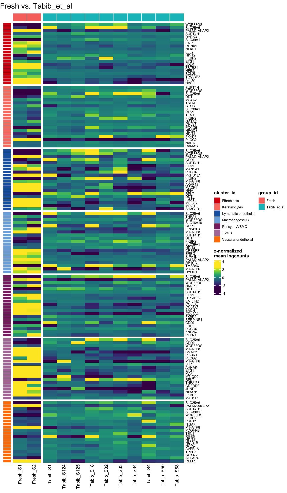

Analysis of heat shock proteins
Dominique Paul
2022-03-14
Last updated: 2022-03-14
Checks: 6 1
Knit directory: 02_Protocol/analysis/
This reproducible R Markdown analysis was created with workflowr (version 1.7.0). The Checks tab describes the reproducibility checks that were applied when the results were created. The Past versions tab lists the development history.
The R Markdown file has unstaged changes. To know which version of the R Markdown file created these results, you’ll want to first commit it to the Git repo. If you’re still working on the analysis, you can ignore this warning. When you’re finished, you can run wflow_publish to commit the R Markdown file and build the HTML.
Great job! The global environment was empty. Objects defined in the global environment can affect the analysis in your R Markdown file in unknown ways. For reproduciblity it’s best to always run the code in an empty environment.
The command set.seed(20211228) was run prior to running the code in the R Markdown file. Setting a seed ensures that any results that rely on randomness, e.g. subsampling or permutations, are reproducible.
Great job! Recording the operating system, R version, and package versions is critical for reproducibility.
Nice! There were no cached chunks for this analysis, so you can be confident that you successfully produced the results during this run.
Great job! Using relative paths to the files within your workflowr project makes it easier to run your code on other machines.
Great! You are using Git for version control. Tracking code development and connecting the code version to the results is critical for reproducibility.
The results in this page were generated with repository version a5a0eb8. See the Past versions tab to see a history of the changes made to the R Markdown and HTML files.
Note that you need to be careful to ensure that all relevant files for the analysis have been committed to Git prior to generating the results (you can use wflow_publish or wflow_git_commit). workflowr only checks the R Markdown file, but you know if there are other scripts or data files that it depends on. Below is the status of the Git repository when the results were generated:
Ignored files:
Ignored: .DS_Store
Ignored: .Rhistory
Ignored: .Rprofile
Ignored: .Rproj.user/
Ignored: .gitattributes
Ignored: Metadata/.DS_Store
Ignored: Metadata/cell_annotation_markers/.DS_Store
Ignored: Paper/
Ignored: analysis/.DS_Store
Ignored: analysis/.RData
Ignored: analysis/.Rhistory
Ignored: analysis/Supple_table_1.png
Ignored: analysis/Unused/.DS_Store
Ignored: code/.DS_Store
Ignored: data/
Ignored: output/.DS_Store
Ignored: output/plots_paper_png/.DS_Store
Untracked files:
Untracked: analysis/logs/HSP_analysis.Rmd-2022-03-14-15h-11m-40s-err.txt
Untracked: analysis/logs/HSP_analysis.Rmd-2022-03-14-15h-11m-40s-out.txt
Untracked: analysis/logs/HSP_analysis.Rmd-2022-03-14-15h-12m-08s-err.txt
Untracked: analysis/logs/HSP_analysis.Rmd-2022-03-14-15h-12m-08s-out.txt
Unstaged changes:
Modified: analysis/HSP_analysis.Rmd
Modified: analysis/admin.rmd
Note that any generated files, e.g. HTML, png, CSS, etc., are not included in this status report because it is ok for generated content to have uncommitted changes.
These are the previous versions of the repository in which changes were made to the R Markdown (analysis/HSP_analysis.Rmd) and HTML (docs/HSP_analysis.html) files. If you’ve configured a remote Git repository (see ?wflow_git_remote), click on the hyperlinks in the table below to view the files as they were in that past version.
| File | Version | Author | Date | Message |
|---|---|---|---|---|
| Rmd | 2187632 | dominique-paul-uzh | 2022-03-14 | added heatshock analysis |
| html | 2187632 | dominique-paul-uzh | 2022-03-14 | added heatshock analysis |
Heat shock proteins
Heat shock proteins (HSPs) are specific proteins that are made when cells are briefly exposed to temperatures above their normal growth temperature. The synthesis of HSPs is a universal phenomenon, occurring in all plant and animal species studied, including humans.
Some people have demonstrated that during tissue dissociation, digestion results in a stress response. Some proteins are produced by cells in response to exposure to stressful conditions (Heat shock proteins).
In this analysis we examine whether the genes involved in the heat shock are differentially expressed depending on the protocol used.
The genes for HSPs are commonly also termed HSP[…]. We searched the GenAge database for the query term “HSP”.
hsps <- c("HSP90AA1", "HSPA9", "HSPD1", "HSPA1A", "HSPA1B", "HSPA8")
cat(hsps)HSP90AA1 HSPA9 HSPD1 HSPA1A HSPA1B HSPA8Load data
sce_integrated <- readRDS(file="../data/EOS_Files/EDI_EOS5_sce.rds")
# colnames(colData(sce))
# table(sce_integrated$manual_labels_coarse)
# We remove some cell types due to low expression levels
# t(table(sce_integrated$manual_labels_coarse, sce_integrated$Sample))
removed_cell_types <- c("Mast cells", "Sweat gland cells", "Melanocytes/Schwann cells/Neuronal cells")
sce <- sce_integrated[,!sce_integrated$manual_labels_coarse %in% removed_cell_types]Are all of the genes in our data?
# all hsp genes appear to be present in the data
hsps %in% rowData(sce)$Symbol[1] TRUE TRUE TRUE TRUE TRUE TRUESingle run of a Pseudobulk DE
# Fresh Sole_Boldo_et_al He_et_al Tabib_et_al
control_protocol <- "Fresh"
test_protocol <- "Sole_Boldo_et_al"
refactorise <- function(sce_object, column_vector){
if (length(column_vector) == 1){
colData(sce_object)[,column_vector] <- factor(colData(sce_object)[, column_vector])
} else {
for (col in column_vector){
colData(sce_object)[,col] <- factor(colData(sce_object)[,col])
}
}
sce_object
}
sce_subset <- sce[,sce$Protocol %in% c(control_protocol, test_protocol)]
sce_subset <- refactorise(sce_subset, c("Protocol", "Sample", "manual_labels_coarse"))
sce_muscat <- prepSCE(sce_subset,
kid="manual_labels_coarse",
gid="Protocol",
sid="Sample",
drop=TRUE)We store number of clusters and number of sample IDs as variables
nk <- length(kids <- levels(sce_muscat$cluster_id))
ns <- length(sids <- levels(sce_muscat$sample_id))
names(kids) <- kids; names(sids) <- sids
pb <- aggregateData(sce_muscat, assay="counts", fun="sum", by=c("cluster_id", "sample_id"))
(pb_mds <- pbMDS(pb))Removing 1 rows with all zero counts
| Version | Author | Date |
|---|---|---|
| 2187632 | dominique-paul-uzh | 2022-03-14 |
Run DS for all Protocols
run_ds_topn <- function(control_protocol, test_protocol, genes=hsps){
sce_subset <- sce[,sce$Protocol %in% c(control_protocol, test_protocol)]
sce_subset <- refactorise(sce_subset, c("Protocol", "Sample", "manual_labels_coarse"))
sce_muscat <- prepSCE(sce_subset,
kid="manual_labels_coarse",
gid="Protocol",
sid="Sample",
drop=TRUE)
nk <- length(kids <- levels(sce_muscat$cluster_id))
ns <- length(sids <- levels(sce_muscat$sample_id))
names(kids) <- kids; names(sids) <- sids
pb <- aggregateData(sce_muscat, assay="counts", fun="sum", by=c("cluster_id", "sample_id"), verbose=F)
res <- pbDS(pb, verbose=F)
as.ggplot(pbHeatmap(sce_muscat, res, top_n=20)) +
labs(title=paste0(control_protocol, " vs. ", test_protocol))
}
cat("\n\n## Fresh vs. Tabib et al \n\n")Fresh vs. Tabib et al
run_ds_topn("Fresh", "Tabib_et_al")Warning: `filter_()` was deprecated in dplyr 0.7.0.
Please use `filter()` instead.
See vignette('programming') for more help
This warning is displayed once every 8 hours.
Call `lifecycle::last_lifecycle_warnings()` to see where this warning was generated.
| Version | Author | Date |
|---|---|---|
| 2187632 | dominique-paul-uzh | 2022-03-14 |
cat("\n\n## Fresh vs. Sole-Boldo et al \n\n")Fresh vs. Sole-Boldo et al
run_ds_topn("Fresh", "Sole_Boldo_et_al")
| Version | Author | Date |
|---|---|---|
| 2187632 | dominique-paul-uzh | 2022-03-14 |
cat("\n\n## Fresh vs. He et al \n\n")Fresh vs. He et al
run_ds_topn("Fresh", "He_et_al")
| Version | Author | Date |
|---|---|---|
| 2187632 | dominique-paul-uzh | 2022-03-14 |
Run DS for heatmap genes
run_ds <- function(control_protocol, test_protocol, genes=hsps){
sce_subset <- sce[,sce$Protocol %in% c(control_protocol, test_protocol)]
sce_subset <- refactorise(sce_subset, c("Protocol", "Sample", "manual_labels_coarse"))
sce_muscat <- prepSCE(sce_subset,
kid="manual_labels_coarse",
gid="Protocol",
sid="Sample",
drop=TRUE)
nk <- length(kids <- levels(sce_muscat$cluster_id))
ns <- length(sids <- levels(sce_muscat$sample_id))
names(kids) <- kids; names(sids) <- sids
pb <- aggregateData(sce_muscat, assay="counts", fun="sum", by=c("cluster_id", "sample_id"), verbose=F)
res <- pbDS(pb, verbose=F)
as.ggplot(pbHeatmap(sce_muscat, res, g = hsps, fdr=1, lfc=0)) +
labs(title=paste0(control_protocol, " vs. ", test_protocol))
}
cat("\n\n## Fresh vs. Tabib et al \n\n")Fresh vs. Tabib et al
run_ds("Fresh", "Tabib_et_al")
| Version | Author | Date |
|---|---|---|
| 2187632 | dominique-paul-uzh | 2022-03-14 |
cat("\n\n## Fresh vs. Sole-Boldo et al \n\n")Fresh vs. Sole-Boldo et al
run_ds("Fresh", "Sole_Boldo_et_al")
| Version | Author | Date |
|---|---|---|
| 2187632 | dominique-paul-uzh | 2022-03-14 |
cat("\n\n## Fresh vs. He et al \n\n")Fresh vs. He et al
run_ds("Fresh", "He_et_al")
| Version | Author | Date |
|---|---|---|
| 2187632 | dominique-paul-uzh | 2022-03-14 |
sessionInfo()R version 4.1.0 (2021-05-18)
Platform: x86_64-apple-darwin17.0 (64-bit)
Running under: macOS Big Sur 10.16
Matrix products: default
BLAS: /Library/Frameworks/R.framework/Versions/4.1/Resources/lib/libRblas.dylib
LAPACK: /Library/Frameworks/R.framework/Versions/4.1/Resources/lib/libRlapack.dylib
locale:
[1] en_US.UTF-8/en_US.UTF-8/en_US.UTF-8/C/en_US.UTF-8/en_US.UTF-8
attached base packages:
[1] stats4 stats graphics grDevices utils datasets methods
[8] base
other attached packages:
[1] ggplotify_0.1.0 ggplot2_3.3.5
[3] muscat_1.8.1 SingleCellExperiment_1.16.0
[5] SummarizedExperiment_1.24.0 Biobase_2.54.0
[7] GenomicRanges_1.46.1 GenomeInfoDb_1.30.1
[9] IRanges_2.28.0 S4Vectors_0.32.3
[11] BiocGenerics_0.40.0 MatrixGenerics_1.6.0
[13] matrixStats_0.61.0
loaded via a namespace (and not attached):
[1] backports_1.4.1 circlize_0.4.14
[3] blme_1.0-5 workflowr_1.7.0
[5] plyr_1.8.6 TMB_1.7.22
[7] splines_4.1.0 listenv_0.8.0
[9] BiocParallel_1.28.3 scater_1.22.0
[11] digest_0.6.29 yulab.utils_0.0.4
[13] foreach_1.5.2 htmltools_0.5.2
[15] magick_2.7.3 viridis_0.6.2
[17] lmerTest_3.1-3 fansi_1.0.2
[19] magrittr_2.0.2 memoise_2.0.1
[21] ScaledMatrix_1.2.0 cluster_2.1.2
[23] doParallel_1.0.17 limma_3.50.1
[25] globals_0.14.0 ComplexHeatmap_2.11.1
[27] Biostrings_2.62.0 annotate_1.72.0
[29] prettyunits_1.1.1 colorspace_2.0-3
[31] ggrepel_0.9.1 blob_1.2.2
[33] xfun_0.30 dplyr_1.0.8
[35] crayon_1.5.0 RCurl_1.98-1.6
[37] jsonlite_1.8.0 genefilter_1.76.0
[39] lme4_1.1-28 survival_3.2-13
[41] iterators_1.0.14 glue_1.6.2
[43] gtable_0.3.0 zlibbioc_1.40.0
[45] XVector_0.34.0 GetoptLong_1.0.5
[47] DelayedArray_0.20.0 BiocSingular_1.10.0
[49] future.apply_1.8.1 shape_1.4.6
[51] scales_1.1.1 DBI_1.1.2
[53] edgeR_3.36.0 Rcpp_1.0.8
[55] viridisLite_0.4.0 xtable_1.8-4
[57] progress_1.2.2 clue_0.3-60
[59] gridGraphics_0.5-1 bit_4.0.4
[61] rsvd_1.0.5 httr_1.4.2
[63] gplots_3.1.1 RColorBrewer_1.1-2
[65] ellipsis_0.3.2 farver_2.1.0
[67] pkgconfig_2.0.3 XML_3.99-0.9
[69] scuttle_1.4.0 sass_0.4.0
[71] locfit_1.5-9.5 utf8_1.2.2
[73] labeling_0.4.2 reshape2_1.4.4
[75] tidyselect_1.1.2 rlang_1.0.2
[77] later_1.3.0 AnnotationDbi_1.56.2
[79] munsell_0.5.0 tools_4.1.0
[81] cachem_1.0.6 cli_3.2.0
[83] generics_0.1.2 RSQLite_2.2.10
[85] broom_0.7.12 evaluate_0.15
[87] stringr_1.4.0 fastmap_1.1.0
[89] yaml_2.3.5 knitr_1.37
[91] bit64_4.0.5 fs_1.5.2
[93] caTools_1.18.2 purrr_0.3.4
[95] KEGGREST_1.34.0 future_1.24.0
[97] nlme_3.1-155 sparseMatrixStats_1.6.0
[99] whisker_0.4 pbkrtest_0.5.1
[101] compiler_4.1.0 rstudioapi_0.13
[103] beeswarm_0.4.0 png_0.1-7
[105] variancePartition_1.24.0 tibble_3.1.6
[107] geneplotter_1.72.0 bslib_0.3.1
[109] stringi_1.7.6 highr_0.9
[111] lattice_0.20-45 Matrix_1.4-0
[113] nloptr_2.0.0 vctrs_0.3.8
[115] pillar_1.7.0 lifecycle_1.0.1
[117] jquerylib_0.1.4 GlobalOptions_0.1.2
[119] BiocNeighbors_1.12.0 data.table_1.14.2
[121] bitops_1.0-7 irlba_2.3.5
[123] httpuv_1.6.5 R6_2.5.1
[125] promises_1.2.0.1 KernSmooth_2.23-20
[127] gridExtra_2.3 parallelly_1.30.0
[129] vipor_0.4.5 codetools_0.2-18
[131] gtools_3.9.2 boot_1.3-28
[133] MASS_7.3-55 assertthat_0.2.1
[135] DESeq2_1.34.0 rprojroot_2.0.2
[137] rjson_0.2.21 withr_2.5.0
[139] sctransform_0.3.3 GenomeInfoDbData_1.2.7
[141] parallel_4.1.0 hms_1.1.1
[143] grid_4.1.0 beachmat_2.10.0
[145] tidyr_1.2.0 glmmTMB_1.1.2.3
[147] minqa_1.2.4 rmarkdown_2.11
[149] DelayedMatrixStats_1.16.0 Cairo_1.5-14
[151] git2r_0.29.0 numDeriv_2016.8-1.1
[153] ggbeeswarm_0.6.0
sessionInfo()R version 4.1.0 (2021-05-18)
Platform: x86_64-apple-darwin17.0 (64-bit)
Running under: macOS Big Sur 10.16
Matrix products: default
BLAS: /Library/Frameworks/R.framework/Versions/4.1/Resources/lib/libRblas.dylib
LAPACK: /Library/Frameworks/R.framework/Versions/4.1/Resources/lib/libRlapack.dylib
locale:
[1] en_US.UTF-8/en_US.UTF-8/en_US.UTF-8/C/en_US.UTF-8/en_US.UTF-8
attached base packages:
[1] stats4 stats graphics grDevices utils datasets methods
[8] base
other attached packages:
[1] ggplotify_0.1.0 ggplot2_3.3.5
[3] muscat_1.8.1 SingleCellExperiment_1.16.0
[5] SummarizedExperiment_1.24.0 Biobase_2.54.0
[7] GenomicRanges_1.46.1 GenomeInfoDb_1.30.1
[9] IRanges_2.28.0 S4Vectors_0.32.3
[11] BiocGenerics_0.40.0 MatrixGenerics_1.6.0
[13] matrixStats_0.61.0
loaded via a namespace (and not attached):
[1] backports_1.4.1 circlize_0.4.14
[3] blme_1.0-5 workflowr_1.7.0
[5] plyr_1.8.6 TMB_1.7.22
[7] splines_4.1.0 listenv_0.8.0
[9] BiocParallel_1.28.3 scater_1.22.0
[11] digest_0.6.29 yulab.utils_0.0.4
[13] foreach_1.5.2 htmltools_0.5.2
[15] magick_2.7.3 viridis_0.6.2
[17] lmerTest_3.1-3 fansi_1.0.2
[19] magrittr_2.0.2 memoise_2.0.1
[21] ScaledMatrix_1.2.0 cluster_2.1.2
[23] doParallel_1.0.17 limma_3.50.1
[25] globals_0.14.0 ComplexHeatmap_2.11.1
[27] Biostrings_2.62.0 annotate_1.72.0
[29] prettyunits_1.1.1 colorspace_2.0-3
[31] ggrepel_0.9.1 blob_1.2.2
[33] xfun_0.30 dplyr_1.0.8
[35] crayon_1.5.0 RCurl_1.98-1.6
[37] jsonlite_1.8.0 genefilter_1.76.0
[39] lme4_1.1-28 survival_3.2-13
[41] iterators_1.0.14 glue_1.6.2
[43] gtable_0.3.0 zlibbioc_1.40.0
[45] XVector_0.34.0 GetoptLong_1.0.5
[47] DelayedArray_0.20.0 BiocSingular_1.10.0
[49] future.apply_1.8.1 shape_1.4.6
[51] scales_1.1.1 DBI_1.1.2
[53] edgeR_3.36.0 Rcpp_1.0.8
[55] viridisLite_0.4.0 xtable_1.8-4
[57] progress_1.2.2 clue_0.3-60
[59] gridGraphics_0.5-1 bit_4.0.4
[61] rsvd_1.0.5 httr_1.4.2
[63] gplots_3.1.1 RColorBrewer_1.1-2
[65] ellipsis_0.3.2 farver_2.1.0
[67] pkgconfig_2.0.3 XML_3.99-0.9
[69] scuttle_1.4.0 sass_0.4.0
[71] locfit_1.5-9.5 utf8_1.2.2
[73] labeling_0.4.2 reshape2_1.4.4
[75] tidyselect_1.1.2 rlang_1.0.2
[77] later_1.3.0 AnnotationDbi_1.56.2
[79] munsell_0.5.0 tools_4.1.0
[81] cachem_1.0.6 cli_3.2.0
[83] generics_0.1.2 RSQLite_2.2.10
[85] broom_0.7.12 evaluate_0.15
[87] stringr_1.4.0 fastmap_1.1.0
[89] yaml_2.3.5 knitr_1.37
[91] bit64_4.0.5 fs_1.5.2
[93] caTools_1.18.2 purrr_0.3.4
[95] KEGGREST_1.34.0 future_1.24.0
[97] nlme_3.1-155 sparseMatrixStats_1.6.0
[99] whisker_0.4 pbkrtest_0.5.1
[101] compiler_4.1.0 rstudioapi_0.13
[103] beeswarm_0.4.0 png_0.1-7
[105] variancePartition_1.24.0 tibble_3.1.6
[107] geneplotter_1.72.0 bslib_0.3.1
[109] stringi_1.7.6 highr_0.9
[111] lattice_0.20-45 Matrix_1.4-0
[113] nloptr_2.0.0 vctrs_0.3.8
[115] pillar_1.7.0 lifecycle_1.0.1
[117] jquerylib_0.1.4 GlobalOptions_0.1.2
[119] BiocNeighbors_1.12.0 data.table_1.14.2
[121] bitops_1.0-7 irlba_2.3.5
[123] httpuv_1.6.5 R6_2.5.1
[125] promises_1.2.0.1 KernSmooth_2.23-20
[127] gridExtra_2.3 parallelly_1.30.0
[129] vipor_0.4.5 codetools_0.2-18
[131] gtools_3.9.2 boot_1.3-28
[133] MASS_7.3-55 assertthat_0.2.1
[135] DESeq2_1.34.0 rprojroot_2.0.2
[137] rjson_0.2.21 withr_2.5.0
[139] sctransform_0.3.3 GenomeInfoDbData_1.2.7
[141] parallel_4.1.0 hms_1.1.1
[143] grid_4.1.0 beachmat_2.10.0
[145] tidyr_1.2.0 glmmTMB_1.1.2.3
[147] minqa_1.2.4 rmarkdown_2.11
[149] DelayedMatrixStats_1.16.0 Cairo_1.5-14
[151] git2r_0.29.0 numDeriv_2016.8-1.1
[153] ggbeeswarm_0.6.0